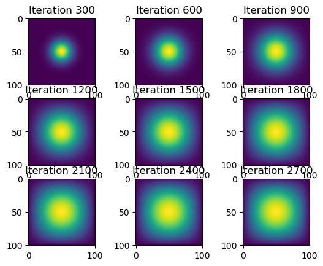

import jax
import jax.numpy as jnp
import time
from matplotlib import pyplot as plt
import numpy as np
from jax.experimental import sparse
import inspectPart 0: Introduction and setting up
Welcome!
Today we will be simulating 2D heat diffusion in various ways. We will be experimenting with four different functions that are predefined in my heat_equation.py file. I will show what each function looks like and explain how it works before viewing the results.
The first step is to make sure to import all the necessary packages. There are a lot!
Alright, let’s go ahead and dive right in.
Part 1: Matrix vector multiplication without JAX
We will start by using our understanding of linear algebra. Each iteration of the heat diffusion will be updated through a matrix-vector multiplication function, called advance_time_matvecmul. Here is what it looks like:
from heat_equation import advance_time_matvecmul
print(inspect.getsource(advance_time_matvecmul))@jax.jit # decorator that tells the function to use XLA for computing
def advance_time_matvecmul(A, u, epsilon):
"""
Advances the simulation by one timestep, via matrix-vector multiplication
Args:
A: The 2d finite difference matrix, N^2 x N^2.
u: N x N grid state at timestep k.
epsilon: stability constant.
Returns:
N x N Grid state at timestep k+1.
"""
# u is NxN, so this is how we determine the size of u
N = u.shape[0]
# perform matrix vector multiplication with A and u, then reshape to proper size
# multiply by chosen epsilon as a stability constant to control timstep size
# add this product to u in order to update it
u = u + epsilon * (A @ u.flatten()).reshape((N, N))
# return updated u
return u
There is a lot going on in this funciton. As we can see, in order to actually utilize this function, we must define A, u, and epsilon. For this blog post, we will say epsilon = 0.2. We want A to be an NxN grid, so we will use an N value of 101. Now, let’s write some code to define A and u0.
For u0, we will start with one unit of heat in the midpoint of the grid.
N = 101
epsilon = 0.2
u0 = np.zeros((N, N))
u0[int(N/2), int(N/2)] = 1.0
plt.imshow(u0)
Awesome! This grid represents the heat diffusion at the beginning. Now, let’s take a look at our function to get A, which is the (N^2 x N^2) finite difference matrix used in heat diffusion.
from heat_equation import get_A
print(inspect.getsource(get_A))def get_A(N):
"""
Creates a (N^2xN^2) finite difference matrix A to be used in heat diffusion, without all 0 rows or columns.
Args:
N: the square root of the row and column sizes of A
Returns:
A: The 2d finite difference matrix with dimensions (N^2xN^2).
"""
n = N * N
# create proper entries for 2d heat diffusion
diagonals = [-4 * np.ones(n), np.ones(n-1), np.ones(n-1), np.ones(n-N), np.ones(n-N)]
# rest of the entries are 0s
diagonals[1][(N-1)::N] = 0
diagonals[2][(N-1)::N] = 0
# create A
A = np.diag(diagonals[0]) + np.diag(diagonals[1], 1) + np.diag(diagonals[2], -1) + np.diag(diagonals[3], N) + np.diag(diagonals[4], -N)
return A
We have defined everything that we will be using for the first part of our heat diffusion. Let’s discuss a little bit. First, after defining N, we will obtain the finite-difference matrix used in the heat diffusion, called A.
A will be used in matrix-vector multiplication, so its nondiagonal entries need to be 0, its diagonal entries need to be -4, and the other tri-diagonal entries need to be 1. This will ensure that when A is multiplied by the heat diffusion grid, the heat diffusion iteration will be run properly. Note that -4 comes from the second-deriative part of the 2D heat differentiation.
After creating A, we then input it into our advance_time_matvecmul function, along with epsilon, the stability constant, and u0, the grid we defined. Then, we can run advance_time_matvecmul as many times as we want to perform one step of heat diffusion on u0.
Note that we must flatten u0 in order to properly multiply the two because it has size NxN whereas A has size (N2)x(N2).
Now, let’s take a look at what this heat diffusion looks like. Let’s run the heat diffusion simulation for 2700 iterations and visualize it. Let’s also calculate how long it takes.
solutions = dict()
start_time = time.time()
# obtain finite difference matrix
A = get_A(N)
fig, axs = plt.subplots(3,3)
for i in range(2700):
# run the iteration
u0 = advance_time_matvecmul(A, u0, epsilon)
# store immediate solution
solutions[i] = u0
end_time = time.time()
total_time = end_time - start_time
# we don't want to waste time visualizing, so now we will utilize the solutions object to plot
for i in range(2700):
if (i + 1) % 300 == 0:
ax = axs[i // 300 // 3, i // 300 % 3]
ax.imshow(solutions[i])
ax.set_title(f'Iteration {i+1}')
# see how long it took to run the simulation (NOT including plotting time)
print(f"time it took: {total_time:0.2f} sec")time it took: 168.46 secOh my goodness! 168 seconds is a long time. Let’s see if we can speed this up a bit utilizing a different method in part 2.
Part 2: Matrix-vector mulitplication with JAX and sparse matrices
One of the issues with using A in Part 1 is that we waste a lot of time computing the 0s during the matrix vector multiplication. Luckily, Jax has a solution for this called the batched coordinate format (BCOO), which exploits the 0s and increases computing time. Saving space on the 0’s is what turns A into a “sparse” matrix. If we do not use Jax’s batched coordinate format, then A is a “dense” matrix. In order to utilize it, let’s turn A into a “sparse” matrix. Here is how we can do this:
from heat_equation import get_sparse_A
print(inspect.getsource(get_sparse_A))def get_sparse_A(N):
"""
Creates finite difference matrix that is sparse.
Args:
N: the square root of the row and column sizes of A
Returns:
A: the N^2 x N^2 finite difference matrix A that is in sparse format
"""
n = N * N
# create proper entries for 2D heat diffusion in matrix-vector multiplication
# utilize jax.numpy in order to be compatible with jax's XLA compiler
diagonals = [-4 * jnp.ones(n), jnp.ones(n-1), jnp.ones(n-1), jnp.ones(n-N), jnp.ones(n-N)]
# make the other rows and columns 0
diagonals[1] = diagonals[1].at[(N-1)::N].set(0)
diagonals[2] = diagonals[2].at[(N-1)::N].set(0)
# create A
A = jnp.diag(diagonals[0]) + jnp.diag(diagonals[1], 1) + jnp.diag(diagonals[2], -1) + jnp.diag(diagonals[3], N) + jnp.diag(diagonals[4], -N)
# use batched coordinate format from Jax to use less space in the matrix
A_sp_matrix = sparse.BCOO.fromdense(A)
return A_sp_matrix
Remember the “@jax.jit” decorator at the top of our advance_time_matvecmul() function? We want the matrix multiplier to actually utilize jax’s XLA compiler, aka, Accelerated Linear Algebra.
So, we are using the “jit-ed” version of advance_time_matvecmul(). In order to do this, we need to also use jax.numpy operations when we create the sparse version of A.
Finally, we convert A to a sparse matrix in order to save space on the 0s. This is the matrix we pass in to advance_time_matvecmul() when we run our heat simulation diffusion.
Let’s go ahead and run this simulation using the sparse matrix, and see if it improves the speed.
# redefine u0 (since it was used in our last simulation)
u0 = np.zeros((N, N))
u0[int(N/2), int(N/2)] = 1.0
# get sparse matrix format of A
A_sparse = get_sparse_A(N)
# run the simulation
solutions = dict()
start_time = time.time()
fig, axs = plt.subplots(3,3)
for i in range(2700):
u0 = advance_time_matvecmul(A_sparse, u0, epsilon)
# store immediate solution
solutions[i] = u0
end_time = time.time()
# calculate total time for simulation, not including visualization
total_time = end_time - start_time
# visualize
for i in range(2700):
if (i + 1) % 300 == 0:
ax = axs[i // 300 // 3, i // 300 % 3]
ax.imshow(solutions[i])
ax.set_title(f'Iteration {i+1}')
print(f"time it took: {total_time:0.2f} sec")time it took: 0.75 secWow! We jumped from 168 seconds to 0.75 seconds. That’s almost 230x faster! Talk about an improvement. Looks like utilizing jax’s BCOO format, along with utilizing its XLA compiler really speeds things up. This is why everyone loves GPUs. But what if we don’t even need a finite difference matrix, A? That brings us to the next part….
Part 3: Direct numpy calculation (no matrix-vector multiplication)
For our simulation, we don’t necessarily need to multiply an actual finite difference matrix by our grid. We can instead utilize numpy operations directly on the grid. Let’s look at a new function to advance the simulation, called advance_time_numpy, that does exactly this.
from heat_equation import advance_time_numpy
print(inspect.getsource(advance_time_numpy))def advance_time_numpy(u, epsilon):
"""Advances the simulation by one timestep, utilizing vectorized numpy operations
Args:
u: N x N grid state at timestep k.
epsilon: stability constant.
Returns:
N x N Grid state at timestep k+1.
"""
# get N
N = u.shape[0]
# pad edges with 0s to handle boundary finite differences
u_pad = np.pad(u, pad_width=1, mode='constant', constant_values=0)
# calculate difference btwn each element of u and its 4 neighboring terms
# -1 is subtracted 4 times in this equation,
# multiply by epsilon
u_new = u + epsilon * (-4*u_pad[1:-1, 1:-1] + u_pad[:-2, 1:-1] + u_pad[2:, 1:-1] + u_pad[1:-1, :-2] + u_pad[1:-1, 2:])
return u_new
This looks great! We didn’t even need to create a finite difference matrix because we could just compute it directly on the grid. Also note that we padded u0 with 0’s to handle boundary conditions, but we still get a N x N grid in return due to the way we compute u_new. Let’s see how long a heat diffusion simulation takes using advance_time_numpy.
# redefine u0 (since it was used in our last simulation)
u0 = np.zeros((N, N))
u0[int(N/2), int(N/2)] = 1.0
# run the simulation
solutions = dict()
start_time = time.time()
fig, axs = plt.subplots(3,3)
for i in range(2700):
u0 = advance_time_numpy(u0, epsilon)
# store immediate solution
solutions[i] = u0
end_time = time.time()
# calculate total time for simulation, not including visualization
total_time = end_time - start_time
# visualize
for i in range(2700):
if (i + 1) % 300 == 0:
ax = axs[i // 300 // 3, i // 300 % 3]
ax.imshow(solutions[i])
ax.set_title(f'Iteration {i+1}')
print(f"time it took: {total_time:0.2f} sec")time it took: 0.22 sec
Great! We got an improvement from both Part 1 and Part 2 in terms of time. This new heat diffusion simulation method is 763x faster than Part 1, and about 3x faster than Part 2.
So it seems that even though Jax’s linear algebra compiler is very fast, it is still better to avoid matrix-vector multiplication when possible.
What if we avoid matrix-vector multiplication AND use jax? Can we get even faster? Let’s take a look in part 4.
Part 4: Jax without any matrix-multiplication
Finally, time for the ultimate combination. We know that the heat diffusion simulation is faster with jax and even faster without matrix-vector multiplication. What if we combine the two? In this function, we will use a similar function as Part 3, called advance_time_jax, except we will use the “jit-ed” version of it. Let’s take a look at what this looks like:
from heat_equation import advance_time_jax
print(inspect.getsource(advance_time_jax))@jax.jit
def advance_time_jax(u, epsilon):
"""Advances the simulation by one timestep, via jax operations
Args:
u: N x N grid state at timestep k.
epsilon: stability constant.
Returns:
N x N Grid state at timestep k+1.
"""
# get N
N = u.shape[0]
# pad edges with 0s to handle boundary finite differences
u_pad = jnp.pad(u, pad_width=1, mode='constant', constant_values=0)
# update u for 2d heat diffusion accordingly
u_new = u + epsilon * (-4*u_pad[1:-1, 1:-1] + u_pad[:-2, 1:-1] + u_pad[2:, 1:-1] + u_pad[1:-1, :-2] + u_pad[1:-1, 2:])
return u_new
As we can see, we once again use the decorator @jax.jit to utilize the “jit-ed” version of the function in Part 3. And, instead of using numpy operations, we use jax.numpy operations so that they will be compatible with the JIT compilations. Let’s run this function to see if there are any time improvements.
# redefine u0 (since it was used in our last simulation)
u0 = np.zeros((N, N))
u0[int(N/2), int(N/2)] = 1.0
# run the simulation
solutions = dict()
start_time = time.time()
fig, axs = plt.subplots(3,3)
for i in range(2700):
u0 = advance_time_jax(u0, epsilon)
# store immediate solution
solutions[i] = u0
end_time = time.time()
# calculate total time for simulation, not including visualization
total_time = end_time - start_time
# visualize
for i in range(2700):
if (i + 1) % 300 == 0:
ax = axs[i // 300 // 3, i // 300 % 3]
ax.imshow(solutions[i])
ax.set_title(f'Iteration {i+1}')
print(f"time it took: {total_time:0.2f} sec")time it took: 0.12 secAwesome! 0.12 seconds. Looks like advance_time_jax is twice as fast as advance_time_numpy. Way to go!
Part 5: Summary and Takeaways
In this blog post, we experiemented with different ways to simulate 2d heat diffusion in python. We tried matrix-vector multiplication, “jit-ed” matrix-vector multiplication with sparse matrices, direct numpy computation, and then direct, “jit-ed”, jax computation. Each successive method was faster than the previous one.
The main takeaway for today is that JAX is FAST, but even though it is fast, its matrix-vector multiplication is not always faster than numpy’s direct computation.